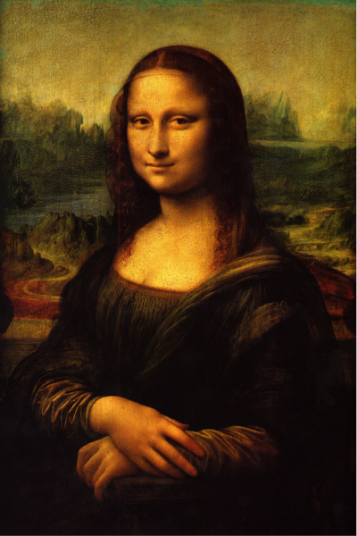

|  |
DescriptionAmong the works created by Leonardo in the 16th century is the small portrait known as the Mona Lisa or "la Gioconda", the laughing one. In the present era it is arguably the most famous painting in the world. Its fame rests, in particular, on the elusive smile on the woman's face, its mysterious quality brought about perhaps by the fact that the artist has subtly shadowed the corners of the mouth and eyes so that the exact nature of the smile cannot be determined. The shadowy quality for which the work is renowned came to be called "sfumato" or Leonardo's smoke. Vasari, who is generally thought to have known the painting only by repute, said that "the smile was so pleasing that it seemed divine rather than human; and those who saw it were amazed to find that it was as alive as the original".Other characteristics found in this work are the unadorned dress, in which the eyes and hands have no competition from other details, the dramatic landscape background in which the world seems to be in a state of flux, the subdued colouring and the extremely smooth nature of the painterly technique, employing oils, but laid on much like tempera and blended on the surface so that the brushstrokes are indistinguishable. Vasari expressed the opinion that the manner of painting would make even "the most confident master ... despair and lose heart." The perfect state of preservation and the fact that there is no sign of repair or overpainting is rare in a panel painting of this date. |
|---|
|
|---|